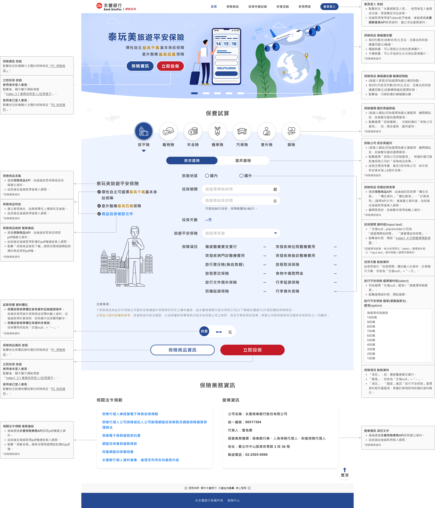
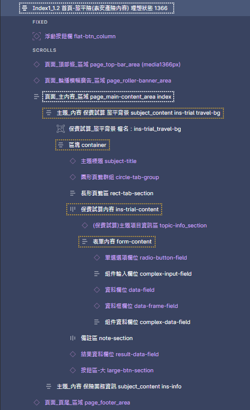

網路投保網站 規範文件
回作品集
文字規範(標題為例)
根據網站內容層級和重要性，訂定各項文字樣式，並設置RWD樣式斷點。
文字給予樣式名稱和數值，提供前端切版建立樣式庫。

@media (max-width:540px)
應用說明


顏色規範(通用色、文本色為例)
以永豐銀行商標配色，考量產業類型、服務訴求選擇用色，並定義使用邏輯和規則。
給予色碼、樣式名稱，提供前端切版建立樣式庫。
圖層命名規則(部分)
自定義規則，可對應網頁樣式名稱(class)。
作為視覺稿對應前端工程師切版的溝通基礎。

元件規範(部分)
將介面元素以原子化方式搭配形成元件，並模組化運用於網站介面。
以功能進行分類，並說明使用模式、操作樣態和擴充性。
以頁籤元件為例
功能機制(部分)
以線框稿的功能機制為基礎，於視覺稿補充操作細節。
以Index首頁示意(桌機版)。
Index1_1.2首頁 理想狀態

RWD元件樣式(部分)
註記RWD斷點，並說明元件樣式變換。
以頁籤元件為例
RWD版面樣式(部分)
註記RWD斷點，並說明版面樣式變換。
以部分Index首頁為例。
Index1_1.2 螢幕解析寬1366px

Index1_1.2 螢幕解析寬1023px

Index1_1.2 螢幕解析寬768px


Index1_1.2 螢幕解析寬540px


Index1_1.2 螢幕解析寬430px
已瀏覽完 規劃文件 文件內容
前往figma瀏覽完整規範文件
文字規範
以內容重要性、閱讀順序為基準，搭配文字樣式。
引導使用者依規劃的內容主次和層級進行閱覽，提升易讀性和認知效率。
Index首頁 保險業務資訊為例(全站通用)
顏色規範
根據功能、資訊的重要程度，選擇顏色運用於網站頁面。
有邏輯的運用色彩於資訊傳達與功能提示，能減少使用者處理資訊的反應時間。
Index首頁 保費試算為例(全站通用)


圖層命名規則
以內容和版面層級，搭配功能導向、圖形樣貌、原生元件名稱...等進行關聯命名。
命名具有規則和識別性，以層級概念貼合網頁的巢狀模式，使視覺稿與前端切版貼合，進而提高開發效率。
Index首頁為例

元件規範
以操作功能為依據，設計元件並模組化。
減少使用者介面操作的學習成本，開發導入figma component、前端樣式庫，統一管理可減少開發、維護時間。
以長形頁籤列rect-tab-row為例。
figma設置component統一管理


Index首頁，保險公司長形頁籤列


Q1常見問答，問答主題長形頁籤列


P1保險商品，商品內容長形頁籤列


P5繳納保費，繳費方式長形頁籤列


RWD樣式
視覺稿以figma的autolayout、dev mode，配合圖層巢狀編排和命名規則。
以此基礎使RWD版面能標註說明，使前端切版有依所據與視覺稿保持一致。
頁面頂部條page_top-bar為例


已瀏覽完 規劃文件 運用要點
前往figma瀏覽完整規範文件